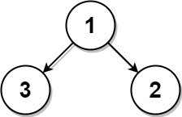
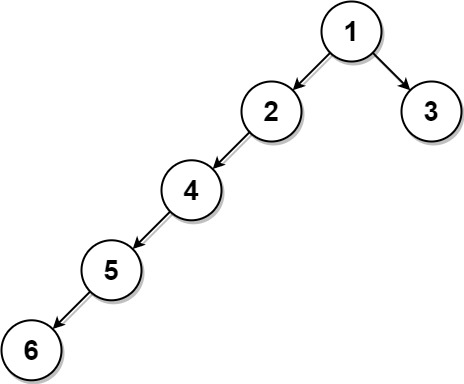

| Category | Difficulty | Likes | Dislikes |
|---|---|---|---|
| Algorithms | Medium | 887 | 189 |
tree | depth-first-search | breadth-first-search | binary-tree
linkedin | databricks | amazon
Given the root of a binary tree where every node has a unique value and a target integer k, return the value of the nearest leaf node to the target k in the tree.
Nearest to a leaf means the least number of edges traveled on the binary tree to reach any leaf of the tree. Also, a node is called a leaf if it has no children.
Example 1:

Input: root = [1,3,2], k = 1
Output: 2
Explanation: Either 2 or 3 is the nearest leaf node to the target of 1.Example 2:
Input: root = [1], k = 1
Output: 1
Explanation: The nearest leaf node is the root node itself.Example 3:

Input: root = [1,2,3,4,null,null,null,5,null,6], k = 2
Output: 3
Explanation: The leaf node with value 3 (and not the leaf node with value 6) is nearest to the node with value 2.
Constraints:
[1, 1000].1 <= Node.val <= 1000Node.val == k.